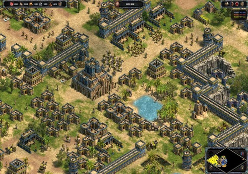
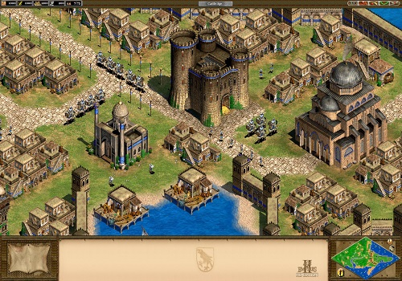
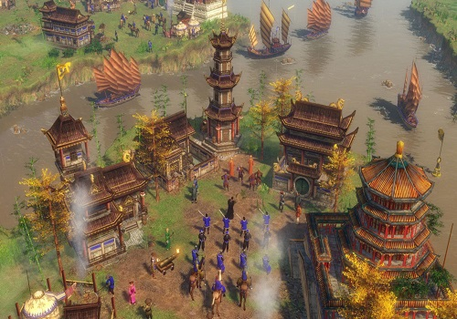
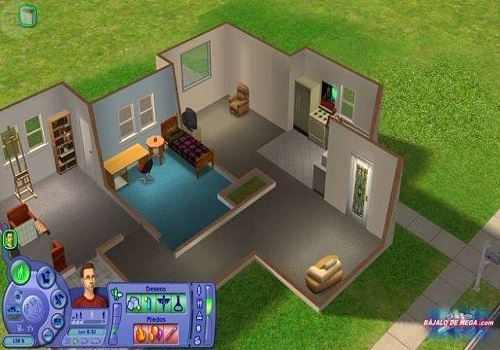

Un videojuego o juego de video es un juego electrónico en el que una o más personas interactúan,
por medio de un controlador, con un dispositivo que muestra imágenes de video. Este dispositivo
electrónico, conocido genéricamente como "plataforma", puede ser una computadora, una máquina arcade,
una videoconsola o un dispositivo portátil (un teléfono móvil, por ejemplo). Los videojuegos son,
año por año, una de las principales industrias del arte y el entretenimiento.
Generalmente, los videojuegos hacen uso de otras maneras, aparte de la imagen, de proveer la
interactividad e información al jugador. El audio es casi universal, usándose dispositivos de
reproducción de sonido, tales como altavoces y auriculares. Otro tipo de realimentación se hace a
través de periféricos hápticos que producen vibración o retroalimentación de fuerza,
usándose a veces la vibración para simular la retroalimentación de fuerza.
×
Sobre la página
Creada por Ivan Camilo Narvaez Vanegas, usando las CSS de W3Schools.
Age of Empires
Age of Empires es un videojuego de estrategia en tiempo real para computadoras personales,
el primero de la serie homónima fue lanzado el 26 de octubre de 1997 y escenificado en una línea
del tiempo de 3000 años, desde la temprana Edad de Piedra hasta la Edad de Hierro.
El jugador tiene opción de elegir entre varias civilizaciones.
Se pueden ver varios tipos de civilizaciones las cuales dependiendo de su elección le
favorecerán ciertas estrategias, por la simple razón que cada una tiene bonificaciones particulares en el juego.



❮
❯
Sagas
Age of Empires I: En la edad antigua, antes de Cristo
Age of Empires II: En la edad media
Age of Empires III: Época colonial
Los Sims
Los Sims es un videojuego de simulación social y estrategia creado por el diseñador de videojuegos Will Wright,
desarrollado por Maxis y publicado por Electronic Arts en el año 2000. Desde entonces la franquicia ha vendido más
de 100 millones de copias (contando las dos primeras generaciones), siendo el videojuego de PC más vendido de la historia.

Los Sims 2
Segunda entrega de la saga de Los Sims
Desde 1991, Will Wright había conseguido resultados similares con el popular juego SimCity y todas sus secuelas.
El éxito de sus videojuegos se basa en su filosofía creativa de aplicar , ya sea de una ciudad, un planeta, un hormiguero o, como en Los Sims, una comunidad vecinal.
Los Sims es el primer videojuego de este género en el que cada ser vivo tiene personalidad propia y se controla individualmente
de forma directa.